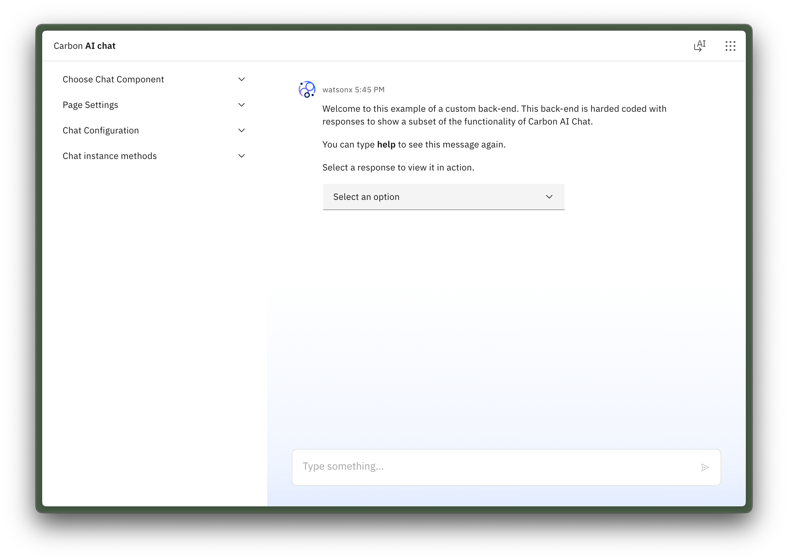

Carbon for AI Chat
Role: design lead
July 2025 - Dec 2025

By the time IBM made AI chat a priority in 2025, many product teams had independently created their own chat libraries in response to market demand. The result was an inconsistent chat experience from product to product. Additionally, some teams didn't have the resources to build and implement a chat interface themselves and requested an out-of-the-box implementation with clear usage guidance. The Carbon Design System stepped in to make an official AI chat library.
My role was to be the Carbon Design System 'ambassador', which means I created communication and collaboration between a group of Carbon developers and and product team designers. I sought out existing designs and code, identified priority user needs, and consolidated fragmented efforts into a system grounded in practical implementation.
Several designers I partnered with had extensive designs backed by solid user research. But the designs had never been delivered in code because there was a lack of staffing or delivery cadence. Therefore, I established agile ceremonies that included both designers and developers. We began to review actual product use cases, prioritize features that mattered most, and match design with existing or adapted Carbon components. Doing so accelerated our path to production while maintaining accessibility and consistency.
As a Carbon ambassador, I also needed to ensure that the chat experience worked cohesively within the context of a UI shell. Earlier that year, I had helped ship a new header and side navigation experience. It rolled out at the same time as the new AI chat experience, and I resolved issues of color tokens and grid influencers.


Eight weeks after starting this project, my team delivered the v1 AI chat library. This release delivered a stable, accessible, and well-documented library, providing a limited but shared foundation for differentiated AI experiences. Many additional features are on the roadmap for v2, including proprietary designs that enable teams to continue innovating on top of the Carbon Design System.
Key contributions and impact:
- Adopted by 20+ product teams across IBM for AI chat and agentic experiences.
- Shipped in 10+ products, several featured at THINK 2025.
- Developed reusable UX patterns and Carbon component extensions, reducing duplication and speeding production.
- Designed the prompt bar experience, centralizing user intent, feedback, and control.
- Built with extensibility in mind: Carbon AI Chat allows teams to implement unique workflowswhile relying on the stability of the Carbon library.
- Collaborated with engineers to ensure library releases were achievable from an implementation standpoint.
Check it out the open-source library to explore a limited view of the chat experience:
